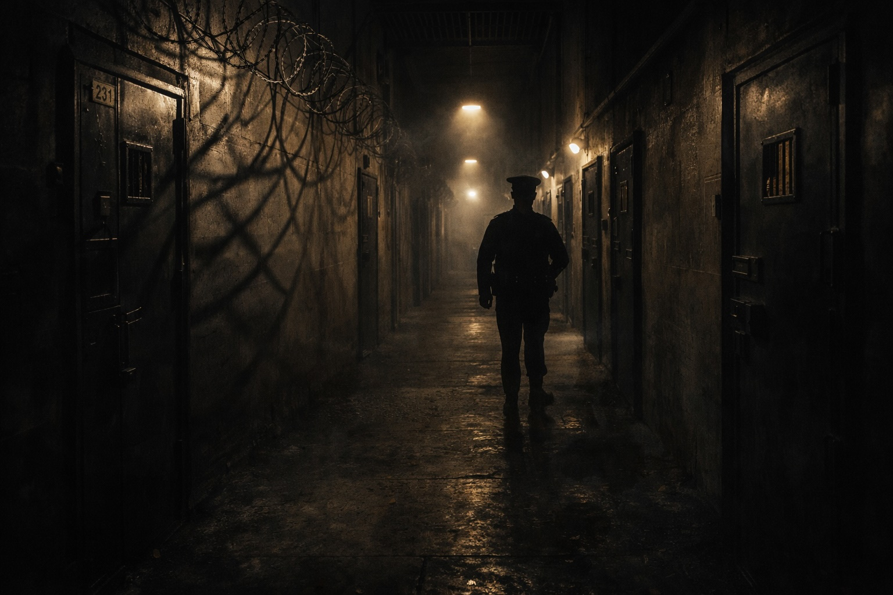

“Nick…please sit down.”
This command was issued by Peter Fury in a soothing manner to the Legal Outlaw, in the hope he would return to be seated.
Moments earlier, I had slung three lever arch files in the direction of my client’s head. Peter’s boxing prowess meant he had bobbed out of the way of the return of his legal papers. These duly smashed into a glass panel at the rear of a small conference room in CAT A at HMP Manchester Strangeways – an apt nom-de-plume for my misconduct.
CAT A prisoners are housed in a select few prisons across the country. They are prisons within prisons, catering for individuals who are deemed to be enemies of the State and, thus, High Risk.
In Peter’s case he had reached, at one point, triple CAT A status – high, high, high risk. In 2023, in a podcast with Terry Stone, he had confirmed his status as an ‘enforcer’. A man who calmly stated he was “a serious man doing serious things – if you are a tosser, you are what you are. Anyone who had a problem with me, could have a problem now!”
The noise of the files hitting the glass reverberated around CAT A, along with profanities from a potty-mouthed Blackpudlian.
“Fuck this – I am out of here”…
“Find some other fucker to bare their arse and front up SOCA!”…
“Keep your fuckin’ file – you work on them!”
Peter maintained a serene demeanour as, compared to his gangland battles, a hissy fit from his lawyer amounted to mere entertainment.
The CAT A guards swarmed both the front and rear doors of the small room, fearing the Legal Outlaw had met his demise; not from the boys in blue, but at the hands of his own client.
In fact, all they witnessed were rantings from a lawyer, with their inmate purposefully placing his hands palms-up on the table to demonstrate his innocence in this mayhem.
Throughout the incident, Peter maintained his composure repeating his mantra for the Outlaw to take off his jacket again and return to terra firma.
At some point, this request lodged in my brain and sanity began to take hold. No guard had entered the room, but their eyes were on stalks looking into the legal ring.
It was a bout the Outlaw could not win. If violence had erupted, it would have been the shortest fight in Petr’s career.
I returned to being seated with Peter remaining silent for a few minutes, permitting me to re-group my brain cells. He then posed:
“Feel better, Nick?”
As our eyes met, we both laughed out loud, much to the annoyance of the CAT A guards. The Outlaws were back in harness.
Peter gathered up the strewn paperwork, returning them to the conference table.
“Let’s get on unpicking the case, Nick.”
This was an instruction I was happy to comply with. This incident bonded us, but has remained ‘our’ secret until I penned this book.
“What happens in CAT A, stays in CAT A.”
At one point in R v Fury, Peter announced, in a matter of fact manner:
“You are as good in the legal world as I am in mine.” Touché.
I regret you will have to wait until Chapter 21 (‘Jolly Rogered’) to read the full horror show which spanned R v Fury. For now, I will narrate how an innocent lad from the Fylde Coast felt the necessity to don an Outlaw’s outfit and ambush those in authority.
Page 1 of 1